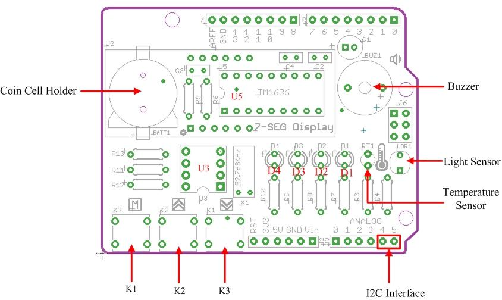
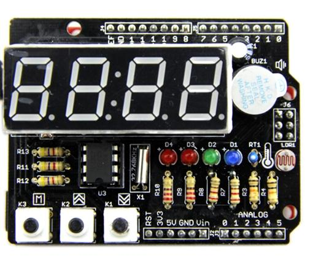
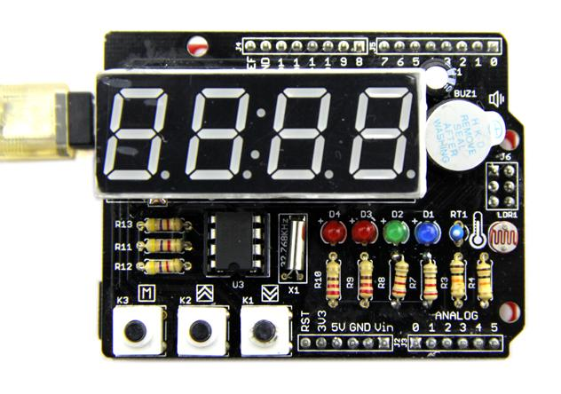
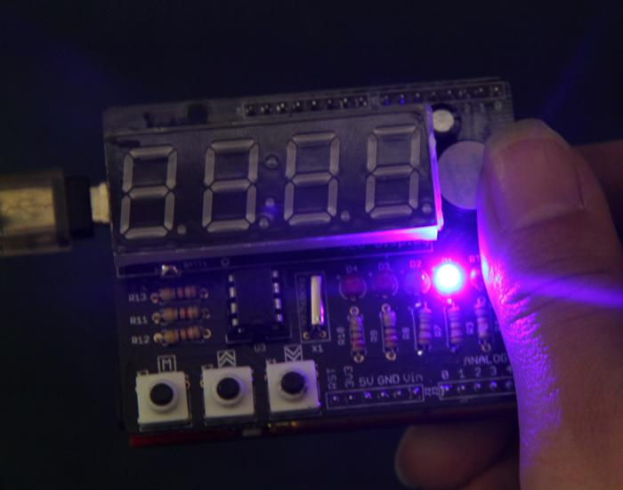

Starter Shield is a perfect start for beginners of Arduino world. You can learn basic soldering tricks and practice programming principles when learning this kit. Have prepared a detailed soldering guide and a fully supported library of programming examples from easy to difficult. , so electronic could be fun even if you have bare technical knowledge, Hope you have fun and gain some knowledge with this kit!
This is a example How to make tiny tiger Machine used by Starter Shield.
Starter Shield contains some basic electronic resources, like buttons, sensors, buzzer and display. There is a great way to learn how to solder. Starter Shield is a through-hole soldering kit for beginners. After assembling the kit, you’ll have mastered the basics of through-hole soldering and you’ll have a geek style alarm clock that works with your Arduino.
Model: SLD90400P

Hardware Resources
Pins Used On Arduino
You are supposed to finish the soldering of your Tick Tock Shield before moving on to following demos. If you didn't, click here to download the soldering guide.
Here we start to present you 7 demos from easy to difficult. They involve usage of all hardware resources on Tick Tock Shield:
Each demo caontains detailed comments in the .ino file. To figure out how every line affects the turnout, you have to study the sketch and comments carefully.
OK, let's check out what the Tick Tock Shield is capable of.

1. Plug Tick Tock Shield onto Arduino board. Connect Arduino to PC via USB cable as show below.

2. Download Starter Shield Library
3. Unzip and put them in the libraries file of Arduino IDE by the path: ..\arduino-1.0.1\libraries.
Note:
From easy to difficult, we prepared a series of demos for you to explore what your Tick Tock Shield is capable of. Follow me to have fun with it.
Demo 1: Sweep The LEDs
Demo 2: Control LEDs By Keys
This demo show you how to control LEDs with the most basic input - buttons.
Demo 3: Change The Pitch Of Buzzer By Keys
This demo involves how to make a sound with buzzer, and because you have already known how to use buttons, in this demo, we use buttons to increase or decrease the pitch of buzzer.
Demo 4: Display Temperature
Get started with sensors. First we have here is the temperature sensor. Try to read its value and display it on the 7 segment display.
Demo 5: Make A Light Sensor Controlled LED
Is it convenient if the brightness of display can auto adjust itself according to the ambient light? This demo shows you how to do this by using a light sensor.

Demo 6: Display Numerical Characters
This demo shows you how to control the content of 7 segment display.
Demo 7: Real Time Clock
This is a final demo that involves all hardware resources we mentioned above and performs all functions of a real life alarm clock, like time display, making a buzz to get you out of your bed and so on. What's more, because a light sensor and a temperature sensor are added, Tick Tock Shield does more than a normal alarm clock. It can sense the ambient light and auto-adjust the brightness of 7-segment display. Also it can show you the current temperature at a given time interval.
Starter Shield library
Starter Shield eagle file
Starter Shield pdf Schematic
TM1636 datasheet
VS1307 datasheet
Class Function: Read and write EEPROM of AVR chip. The EEPROM size of ATmega328P Chip is 1K Bytes for Seeeduino V3.0. The contents of the EEPROM you have wrote will not be lost when power off. It is used for saving alarm time and alarm enable flag in the RealTimeClock Demo, You don't need to reset the alarm clock.
Function Description:
1. EEPROM.read(int address);
This function is used to read data from a specified address of EEPROM.
Example：
temp_data[i] = EEPROM.read(i);
2. EEPROM.write(int address, uint8_t value);
The function is used to write data to a specified address of EEPROM.
Example:
if(temp_data[i] != mark[i])
{
EEPROM.write(0,mark[0]);
EEPROM.write(1,mark[1]);
EEPROM.write(2,mark[2]);
EEPROM.write(3,mark[3]);
EEPROM.write(4,mark[4]);
return true;
}
Class Function：this class contains all funtions to control four 7-segment displays.
Function Description:
1. tm1636.point(boolean PointFlag);
The function is used to turn on or off the clock point (:). This function will come into effect every time the display content changes.
Example:
if(flag_clockpoint)
{
tm1636.point(POINT_ON);
}
else tm1636.point(POINT_OFF);
2. Tm1636.display(int8_t DispData[]);
Create a character flow with the content of DispData[].
Example:
tm1636.display(disp);
Class Function：operate all components on the Tick Tock Shield.
Function Description:
1. ticktockshield.init();
The Initialization of Tick Tock Shield.
2. ticktockshield.runLED(byte speed, byte direction);
This function sweep 4 LEDs in the direction you choose.
Example:
/*Run the 4 LEDs from left to right*/ ticktockshield.runLED(1,LEFT_TO_RIGHT);
3. ticktockshield. turnOnLED();
Turn on all 4 LEDs.
4. ticktockshield. turnOffLED();
Turn off all 4 LEDs.
5. setLed(unsigned char led_status, int pinLED);
The Function is used to turn on or off an individual LED.
Example:
void TickTockShield::turnOffLED()
{
setLed(LOW,LED_CLOCK_ADJUST);
setLed(LOW,LED_ALARM_ADJUST);
setLed(LOW,LED_BRIGHT_ADJUST);
setLed(LOW,LED_ALARM_ENABLE);
}
6. ticktockshield.alarming();
Let the buzzer buzz.
Example:
/*It will sound alarm for a minute untill the "MENU" key is pressed*/
if(ticktockshield.isAlarmEnable())
{
ticktockshield.alarming();
}
7. ticktockshield.turnOffAlarm();
Turn off the alarm when the buzzer is buzzing.
8. ticktockshield.setAlarm(uint8_t hour,uint8_t minute,uint8_t flag_enabl);
Set the alarm time.
Example:
ticktockshield.setAlarm(12,0);//Yes,the alarm clock is initialized to 12:00 and the data in the EEPROM.
9. ticktockshield.getAlarm();
Read the preset alarm value from EEPROM and store them into given variables, including the enable flag of the alarm.
Example:
if(isFirstLoad())//if it is the first time to load the firmware?
{
ticktockshield.setAlarm(12,0);
}
else ticktockshield.getAlarm();//No,read the alarm clock stored in EEPROM
10. ticktockshield.getTemperature();
Get the reading from temperature sensor.
Example:
/*Read the ambient temperature and display on the digital tube.*/ ticktockshield.displayTemperature(ticktockshield.getTemperature());
11. ticktockshield.displayTemperature(int8_t temperature);
Display temperature value(negative value supported) on the 7 segment display. The character C represents celsius degrees.
Example:
ticktockshield.displayTemperature(ticktockshield.getTemperature());
12. ticktockshield.scanKey();
Find out which key gets pressed. Return the pin number of the key pressed. And return "-1" if no keys is pressed.
if((flag_scan_again)&&(KEY_MENU == ticktockshield.scanKey()))
{
ticktockshield.writeToAdjustArea();
ticktockshield.processKey();
system_states = SYSTEM_ADJUSTING;
}
13. ticktockshield.processKey();
Process the command you enter through keys. If it's a normal press. This function will make a buzz corresponding to the press. If you press the "menu" key longer than 3s, then this function will make Tick Tock Shield enter time setting mode. If no other key gets pressed after the "menu" key, then this function will make Tick Tock Shield quit the time setting mode.
14. ticktockshield.processSystemStatus();
Execute different tasks according to the system status when it's called. The system status can be "adjust clock time" 、 "alarm time", "adjust 7 segment display brightness" and "enable alarm".
15. ticktockshield.writeToAdjustArea();
Deliver the latest time information from normal time display mode to time setting mode so that they can be used under time setting mode.
16. ticktockshield.writeToNormalArea();
Deliver the time information set in time setting mode to normal time display mode.
17. ticktockshield.writeTime();
Write time information into RTC chip.
18. ticktockshield.getTime();
Read the current time information from RTC.
19. ticktockshield.displayTime();
Display time on 7 segment Display.
Example:
if(ticktockshield.isAlarmEnable())
{
tm1636.point(POINT_ON);
ticktockshield.displayTime();
system_states = SYSTEM_ALARMING;
return;
}
20. ticktockshield.display(int8_t DispData []);
Display alpha-numeric information 7 segment Display.